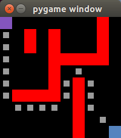

Code can be found on Github: Repository
A* is an algorithm for pathfinding and graph traversal that traverses using sunk cost and a prediction heuristic to determine a path from start to destination.
Using Python and the Pygame framework, I built desktop graphical demos to illustrate A* in action. There are three main demos: main_demo.py, realtime_chase.py and userdefined.py. In userdefined.py, user places obstacles on the map using the left clicks and then press space to calculate the path using A*. In main_demo.py and realtime_chase.py, user left clicks to define the starting point and right clicks to define end point.

Possible Extensions: Game that utilizes A*.